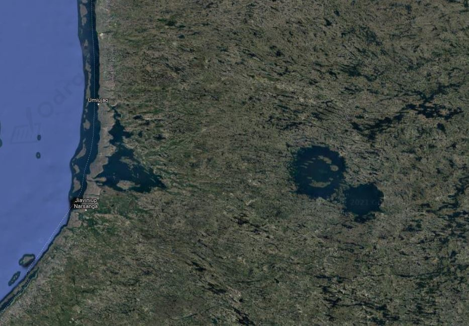

a)
Masa wyemitowanego dwutlenku węgla:
Średnia gęstość dwutlenku węgla:
Gęstość wyrażamy jako:
Wyznaczmy jaką objętość zajmuje ten gaz:
Objętość kuli wyrażamy jako:
Stąd promień tej kuli możemy wyznaczyć jako:
Obliczmy promień kuli o objętości odpowiadającej wyznaczonej objętości dwutlenku węgla:
Zatem ten gaz można byłoby przechować w kuli o promieniu 17 km.
Średni promień 18 km ma krater uderzeniowy Clearwater West położony we wschodniej Kanadzie.
Na poniższym zdjęciu satelitarnym widać dwa kratery uderzeniowe (większy o promieniu 18 km), w których utworzyły się jeziora.

b)
W jednej butli mieści się 30 kg sprężonego dwutlenku węgla. Obliczmy jaką ilość butli potrzebujemy do zmagazynowania wytworzonego dwutlenku węgla.
Objętość jednej butli wynosi 40 l. obliczmy jaką objętość zajmą wszystkie te butle.
a)
Energia zużywana przez przeciętnego Polaka w ciągu jednego dnia:
Energia zużywana przez przeciętnego Polaka w ciągu roku:
Roczna energia produkowana przez 1 m2 paneli fotowoltaicznych:
Zapiszmy proporcję pozwalającą wyznaczyć wymaganą powierzchnię paneli fotowoltaicznych.
b)
W Polsce żyje obecnie około 40 mln ludzi. Obliczmy powierzchnię paneli fotowoltaicznych jakie wytworzyłyby energię potrzebną dla całej ludności Polski.
Powierzchnia Polski wynosi:
Obliczmy jaką część naszego kraju zajęłaby instalacja fotowoltaiczna:
Około 2% powierzchni Polski zajęłyby panele fotowoltaiczne wytwarzające energię elektryczną potrzebną dla wszystkich mieszkańców Polski.
Ulewne deszcze częściej doprowadzają do podtopień i powodzi. Wezbrania rzek powodują powiększanie koryt rzek i niszczenie lokalnych krajobrazów oraz naturalnych siedlisk zwierząt. Brak potrzeby odśnieżania dużych aglomeracji stanowi zaletę mniejszych opadów śniegu, ale zwiększone opady deszczu są wyzwaniem dla infrastruktury kanalizacyjnej miast.
Klimat w Polsce kilkadziesiąt lat temu był zdecydowanie surowszy. Zimy były długie i bardzo śnieżne. Obecnie obfite opady śniegu obserwujemy dopiero w styczniu i luty. Zdarzają się również anomalie, gdzie śnieg pada jeszcze w marcu i kwietniu.